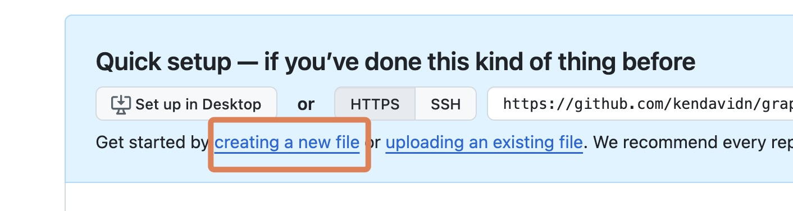
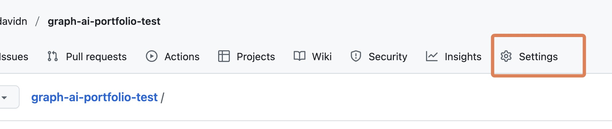
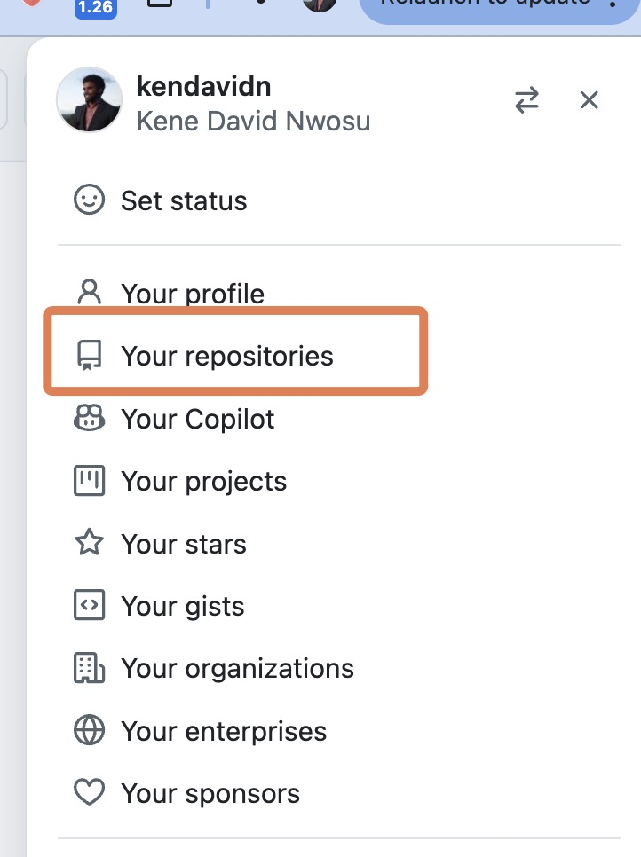
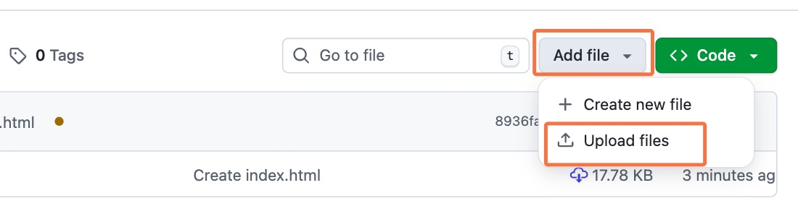

Week 1: Set Up Your AI‑Course Portfolio Website
Overview
Welcome to your first hands-on workshop! This guide will walk you through creating an AI-Course Portfolio Website where you will show off the work you create in the course.
By the end of this session, you’ll have a live, professional website which you will populate with your work each week.
To see what your portfolio might look like by the end of the course, review:
What You’ll Learn
Through this workshop, you’ll gain practical experience with:
- Using AI (Gemini/ChatGPT) to generate professional web content
- GitHub for code hosting and version control
- GitHub Pages for free website deployment
- Basic HTML structure and web development concepts
Let’s get started!
1 PART 1: Creating the Site
1.1 Give the AI model the course information and your CV and ask it to build a portfolio website
Download the course brochure from thegraphcourses.org/aiw.
If you have a paid ChatGPT account, go to chatgpt.com and select the “Thinking” model. Otherwise, we recommend using Gemini at gemini.google.com and changing the model picker at top left to “Pro” if you still have some pro usage available.
Next, start a new message and create an instruction similar to this:
Build an elegant one‑page portfolio website for my "Generative AI for Work & Research" course. Site should be rich with beautiful styling, gradients and sections. Use the course information and my CV, which are given below. The site should have at least the following sections: - About me - About the course - My weekly submissions (These can be placeholders for now, we will add links to each submission later on) Use Canvas to render the HTML. Don't use frameworks. Don't include my email in the site to avoid spamUpload the course brochure and your CV to the chat window.
Use Enter or click the “Send” button to send the prompt to the model.
(If you are very private and don’t want a public website with your info online, you can use a pseudonym or use a random sample CV from the internet. e.g. this one)
1.2 Render the Canvas & refine
- Gemini/ChatGPT should reply in a code block canvas. Once the code is done generating, the live website should be displayed.
- If the website is not displayed, click the
Previewbutton to open the live view. - Now you can ask follow‑up prompts. For example we recommend the following:
- Upload a screenshot of a site you like and ask the model to “take some inspiration from this theme and layout”.
- Ask the model to change some specific region, color or text, (For example, change the accent colour to green, or change specific pieces of text.)
- (Side note: If you know some basic HTML, you can click the edit button at the top right of the canvas and edit the HTML directly. Later on, we will show you how to make small edits with a visual interface using the GrapesJS editor.)
1.3 Stop preview & copy the HTML code
- Click the
Codebutton at the top right of the canvas (on Gemini) or theStopbutton (on ChatGPT) to view the code. - Select all the HTML inside the code box then copy it with
Ctrl/Cmd+C.
1.4 Create a GitHub account (one‑off)
Github is a platform for hosting and collaborating on code. It is one of the most generous and reliable platforms for freely hosting static websites. We will use it to host your portfolio website. - Visit github.com → click Sign up and follow the steps.
1.5 Make a new repository
- Click the
＋icon (top‑right) → New repository.

- Name it
graph-ai-portfolio(or something similar). - Make sure the visibility is set to Public, and leave every other setting with the default values. Click Create repository.
1.6 Add your HTML file
- Inside the GitHub repo you created, find the button to “create a new file” and click it.

- Type
index.htmlin the filename box, lowercase with no spaces.

- Paste the HTML you copied from ChatGPT into the main code box below the file name, where it says “Enter file contents here”.
- At the top right, click the Commit changes button.
Congratulations! Your website has now been added to GitHub, which will host it to make it accessible to the world. We need one more step to make it live: turning on GitHub Pages.
1.7 Turn on GitHub Pages
- Go to Settings button at the top right of your repository page.

- In the left sidebar, click Pages.
- Under Source, make sure Deploy from a branch is selected.
- Under “Branch”, click the dropdown menu that should say “None” and change it to main
- Click Save. Wait ~1 minute.
- You can then click on the “Actions” tab then “pages build and deployment” to see the build process.

- After a minute or so, your site should now be live at the URL on the pages-build-deployment page.
2 PART 2: Making Changes to the Site: Adding a profile picture
While most of the webpage can be directly represented by the text in the index.html file you obtained from the LLM, images are bit more complicated.
You typically need to host the image with a special platform, obtain a link to it, and then add that link (or ask an LLM to add it) to the index.html file.
In this section, we will add a profile picture to your website.
2.1 Add a profile picture to GitHub
- To get back to your repository home, again visit github.com, click on your profile at the top right, then click on “Your repositories”


Locate and click on your repository, which should be called something like
graph-ai-portfolioLocate the button or icon to “Add file”. Click on it and select “Upload file”

Drag your profile picture into the box, then click on “Commit changes”
Click Commit changes.
Now click on the name of the uploaded image → right‑click it → Copy image address. Now you have a link that can be embedded in the index.html file!
Back in ChatGPT, paste the image address into the prompt and ask the model to insert the image. Your prompt might might look something like this:
Insert this image of me at the top of the page as a circular avatar. The image is at this address: https://github.com/kendavidn/my_graph_portfolio_2/blob/main/linkedin%20photo%20-%20Kene%20David%20Nwosu%20(1).png?raw=trueCopy the new HTML that ChatGPT generated → return to your index.html on GitHub → click the edit file (✎) button at the top right.
Delete all the existing code in the file, then paste in the new code from ChatGPT.
At the top right, click the Commit changes button.
Go again to Actions, and click on the latest build to observe the build process. Your live site, if refreshed, should now have the avatar!
2.2 Submitting your work
You will submit two things:
- The link to your live site. This should be something like
https://yourusername.github.io/graph-ai-portfolio/. YOu will paste this as a comment on the workshop page. - The index.html file. To download it, go to the GitHub repo, click on the index.html file. Locate the download button or icon in the top right corner. Click it to download the file. You will upload this to the workshop page.